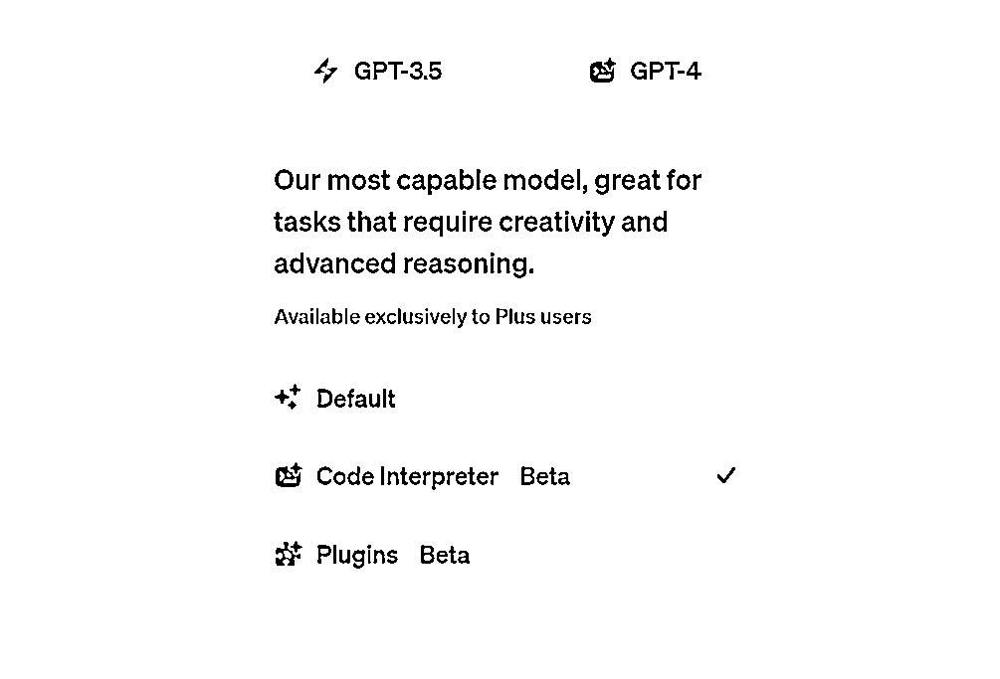
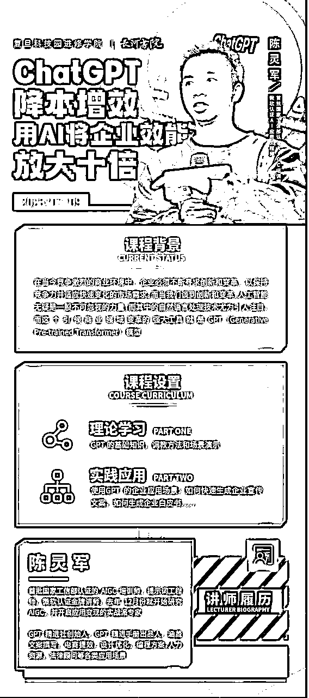

来源：https://qp7gm5nhlh.feishu.cn/docx/BS9QdN9qKoMXroxzy3AcMUlZn0t
大家好，我是灵军，1个月前刚从生财辞职，目前全职在AI领域创业。
GPT火了半年多，想必不少圈友听过 GPT企业培训 这个生意。
我之前也对这个职业非常好奇，刚好自己擅长演讲，跟着亦仁和刀姐身边也学到了不少GPT的应用和商业知识。
于是5月份周末时间，我尝试在一些企业家内部小聚，黄有璨线下学社活动分享过，反馈不错。
出来创业后，选择第一个让自己活下来的业务方向也是成为一位GPT企业讲师，这1个多月也受邀到复旦大学EMBA，金螳螂集团（工装领域连续19年Top1的上市公司），中国铁塔，苏州金龙集团等头部企业讲课。
收费也从一开始试探性，到后面正式突破单日课酬1万+，算是完整跑通了GPT企业培训的闭环，今天就将这个过程做个拆解，希望能对GPT企业培训领域感兴趣的圈友们有所启发。
这篇文章将会解答大家关心的各类问题：
一、企业篇
1、什么企业会愿意花钱请讲师来做GPT培训
2、目前企业对GPT的培训要求是怎么样的，如何让他们满意
二、讲师篇
1、什么样的人适合做GPT企业讲师
2、如何包装自己的Title，从而让企业愿意为你付费
3、如何快速学习，掌握体系化的GPT授课知识
三、业务篇
1、如何找到愿意付费培训的企业
2、如何提高培训单子的转化率
3、GPT企业现场培训的一些小技巧
四、展望篇：
1、GPT企业培训是个持久的好生意么
2、除了给企业讲课，还有哪些业务可结合
首先，在进入这行之前，我们必须要先了解：什么企业会真正付费请讲师来做GPT培训。
这部分我曾存在一个误区：认为既然企业想邀请专家来进行培训，肯定是他发现这个业务有可以用GPT取代或大大提效的可能性，才会花钱。毕竟钱要花在刀刃上。
但实际当我给企业讲完课之后，我才发现：逻辑不是这样的。
真正会请GPT讲师的，一般都是培训预算充足的大型公司，上市公司，头部国企等，规模较大的公司在培训预算上的费用都是以上千万来计算的。
展开分析：前程无忧，专做企业培训的高管朋友和我分享，大企业每年对人才培养都有相应的经费，比如新人培训，中层骨干，高层核心等，每年都会组织团队建设，外部培训等预算，上市公司甚至会单独成立相应的商学院部门，组织定期公开课等，帮助内部员工积极向外交流，了解外部动态。
以新员工为例，大公司的管培生入职培训往往是1-2周，这1-2周系统培训中，会涵盖公司文化，管理职能，职场技能，心态调整等各个方面，然后也会穿插一些基于行业动向的，甚至科技前沿类的培训，放在整体的方案中，于是就有了采购环节。
而对于中层干部，高层核心等骨干培训，他们也是听过众多培训的老将啦，很多内容，比如管理培训，技能培训等，已经引不起他们的兴趣，而像GPT这样的培训课题，既有前沿科技，又有一些应用场景演示，愿意接触新鲜事物，迎接未来的人，都更愿意来参与。
而对一些小微企业而言，如果预算有限，他们更想要的是一个提效的方案，立刻有效，可能会邀请身边朋友对这个方向玩的溜的，来做一次公益分享。
以及最好是企业自己有这个订单需求，我们去承接，而不是企业没有需求，我们找到了一把手，甚至部门领导人，我们去给他们描绘AI带来的巨大价值，这种订单不建议做，要么她感觉你在忽悠她，要么前期挖的坑太大，交付不理想。
所以我们如果想要在这个领域赚钱，最关键的第一步，就是要先明确愿意付费的企业类型是怎么样的。
很多人一开始会担心企业对GPT培训的要求会很高，自己无法在一场培训之内，让用户真正提效，担心用户花了钱，只是获得认知上的升级，并不会买单。
但客观来说，在生财有术的圈子里，圈友们对GPT已习以为常了，但企业的确还是存在大量的信息差，尤其是一些大型企业，传统企业，他们真的反应很慢。
提供供参考的数据
每期我去企业培训时，都会调研几个数据
1、听过GPT的：占比90%以上，因为参加活动一般都是对GPT感兴趣的，肯定自己有听过
2、用过GPT的：占比20-30%左右（包含国内镜像版本或国内文心一言等）
3、用过官方版：占比5%以内，凤毛麟角（PS：这样的人可以多互动哈哈）
4、真正在提效：基本没有
以上数据就是帮助我每次讲座时，快速判断下面的学员层次，方便我决定这次要讲的深还是浅。
不是因为他们不关注这些，而是真的平时太忙了，一直聚焦在自己当下业务中，没时间研究其他。
如果将企业需求分层次：可分为三层
1、科普性质：将GPT的历史发展，应用演示串联，让用户感受到科技发展带来的突破
2、场景提效：深入部门内的业务场景，结合GPT实际演示，提供提效方案
3、工具提效：结合企业的工作流，用AI接口等方式嵌入公司常用软件，进行提效
大部分企业员工，都属于零零散散听过不少GPT信息，第一阶段其实需要的都属于第一种。
所以如果能交付好第一种：能将原来他们碎片化看到的信息串联起来，以及通过一系列的应用演示，让他们看到GPT的目前的价值，就会非常满意啦。
第二种：属于很多企业一下子上来就提需求，希望能结合具体岗位，部门做定制。
比如上次我给中国铁塔的财务部门做培训时，他们有讲到如何用GPT给财务部门提效，但其实他们对GPT的理解也远远没到那个程度，先做好基础的科普，再结合实际的场景比如用新出的插件来做数据分析，做一些结合业务场景的演示，就可以啦。

如果能让他们能试玩体验就更好了（解决方案可借助，国内微软的openai接口）。
第三种：则是直接找对应的解决方案提供商，他们更需要的也是落地提效方案，而不是找培训讲师啦。
当然，这样的企业还属于少数，因为要么还在被科普的阶段，要么自己已经掌握AI，忙着去做提效改革。
总结：
GPT企业培训的交付核心，还是在于科普，演示，让他们能系统理解什么是GPT，以及GPT可以用在哪些场景给企业提效（一次展示5-10个场景），其实满意度就会非常高啦。
其实就是会应用GPT+擅长演讲，两项技能都不差，有一些基础，就可以来尝试。
具体点
应用GPT标准：你能应用在10个场景以上帮助企业提效。
擅长演讲：不恐惧公众演讲，能在台上流利分享完毕1小时以上内容。
如果不确定，给你快速检验的方式：
下周约一个朋友的企业，最好大型的，给他们讲一次（免费也行），你就大概判断出自己是否能胜任啦。
作为GPT讲师，如何包装自己？
1、学历标签：如果是博士，985高校，海外留学经历，往上写，都有价值
2、专业标签：
3、经历标签：比如生财有术GPT航海教练，万人GPT星球创建者等
4、案例标签：之前曾去哪些公司讲过课，比如XX上市公司等
PS：如果这些标签都没，有以下解决方案：
1、可自己尝试弄一个，比如我在得到高研院成立了一个【GPT精进社】，对外就可以讲：得到高研院【GPT精进社】创始人，《GPT精进手册》撰写者等，也是一个不错的名头。
2、联系当地的大数据研究院，人工智能实验室，人工智能协会等等，看是否托关系挂个名，搞个特聘专家等。
3、花钱参加一些相对权威的认证培训，可获得认证证书，增加含金量。
当然，如果以上梳理完之后，发现好像还是缺少些亮点，市场上都是一些博士在讲课，自己相比较不太厉害。
也别担心，你可以也突出你的差异化，比如擅长场景应用和AI商业案例分析等
因为其他教授，博士他们讲课往往很晦涩，技术派，你如果能掌握企业的应用场景，演示能力，可以往这个方向突出自己的优势。多尝试梳理一些你能讲的应用场景，以场景的价值让企业来给你讲课的机会。
换位思考：
对于企业而言
1位是人工智能技术博士，能讲机器算法，原理，宏观层面的知识。
另1位则更重应用，能简单讲讲GPT的历史，核心演示10个帮企业提效的场景
很多企业，其实也会更愿意采购应用部分的。
参考下面我给复旦EMBA的自我介绍，除了正常的介绍外，还罗列了一些具体应用场景才吸引他们的。

有人问我：给企业讲课的课件是否可分享，抱歉，这个是我吃饭的家伙，不能分享。
但可以分享下【GPT的干货内容都在哪学？】
其实资料很多，你应该也能接触到不少
我随意举例：
1、社群类：生财有术，刀姐的AI探索家都是不错的社群，干活帖子不少，认真研究看完就是高手。
2、公众号：新智元，量子位，AIGC研修社，机器之心等，算是不错的公众号，值得研究
3、研究报告：比如之前清华大学0516发布的研究报告，我反复看了不下10遍。
4、Openai官网：这是一个被人忽略的渠道，最源头，最直接，也最权威。
5、GitHub：程序员的天堂，开源网站，很多工具，应用灵感都来自于此。
6、视频网站：B站，油管，以及一些爆款视频号的博主内容等
资源渠道很多，可能你知道的比我还多，收藏的资料也有好几个G，但扪心自问一下，真的看了么？
分享我的高效学习方式，供你参考：
1、精华资料库：我给自己建立了一个【精华资料库】，每次在其他社群，视频号等，看到好的资料都整理进去，1周内必会安排时间系统学习。
2、先模仿再超越：我的学习方式很笨，比如B站一个如何用GPT搭建倒计时小程序的视频，我就会参考他们展示的步骤，一步步照着学，先照猫画虎，一个步骤也不改，等知道了他的步骤后，我再做一些举一反三，延伸发挥。
3、输出倒逼输入：当然，最快的学习方式，就是一开始先去接下企业订单，然后倒逼自己去系统准备，这样进步最快。
有这么几个渠道，供你参考
1、经纪公司：
很多大型公司每年都有不少预算用于企业培训，但找到合适的讲师也存在困难，所以因为这个信息差，目前市场上也形成了稳定的经纪公司，他们一般会链接企业端，承接他们的需求，然后另一端连接讲师端，大量招募合适的讲师，然后根据企业需求来撮合讲师成单。
如果是个人讲师，想要更多的资源，经纪公司是不错的渠道，在添加经纪公司之前，需要将自己的履历，能讲课的内容，提前准备，方便他们和企业对接时，可以用到。
类似的经纪公司，比如华师经纪，前程无忧的培训事业部等。
当然，个体的经纪人也可考虑，估计也是不少从大机构出来，也有一些大企业资源。
2、讲师协会：
类似的还有浙江省培训师协会，讲师类社群等
如果第一时间找不到对应的讲师经纪人，那么进入一些讲师协会，培训师协会等也是一个方式，有一些经纪人，甚至企业，在缺乏讲师时，就会在这个渠道喊人。
然后也会有一些讲师有稳定合作的经纪人，可以让他帮忙对接，可以增加接单的概率。
3、HR总监类社群
一些HR社群也是值得进的，尤其是一些高等级的人力总监的社群，他们是采购的核心决策人
这样可以直接联系到企业端，减少经纪人在中间分成比例，可以赚的更多。
但相对而言，企业直接对接讲师采购会比较少，一般还是会通过经纪公司为主。
4、企业家社群，企业家协会等
一些EMBA的校友会，企业家社群，私董会等等
不过有可能按照我们能目前等级，接触到大部分企业家是中小企业老板，培训不是他们首要考虑的需求。
5、其他
类似的还有一些孵化产业园，创新产业研究院等等渠道，他们在当地也有一些企业资源，影响力等，也有资源能组织活动。
如果还有其他渠道，欢迎圈友们补充。
1、现在市面上的GPT企业讲师还不多，如有意向，可尽快出击，目前还属于红利期
2、准备好自己的课纲，自我介绍，让别人看起来就像一个专业的GPT讲师
3、在上述基础上给企业再准备一份相对定制化的培训方案，提高企业中签率
4、明确自己的真正底线（比如低于多少价格不接），适当让利给经纪人，因为经纪人也会看到底能分多少钱
其中3，下面是我给复旦大学EMBA出的定制版方案：
因为当下GPT企业培训市场不规范，如果你能多做1-2步，让他们感觉被定制，有惊喜，大概率就能获得订单。
1、之前没讲过3小时，甚至一天（6小时）的课程，该怎么合理规划？
2、如何增加现场氛围和效果，保证满意度
如果让我给GPT企业培训师这个职业打分，我会打70分
因为从【GMV＝用户基数＊客单＊复购＊转化率】分析
目前只在客单价上有优势，用户基数和复购率不高，也不算特别诱人的生意模式。
但如果你坚信GPT拉开了第三次工业革命的序幕，不亚于PC和移动互联网的诞生
认知和技能的培训市场永远都会存在，给企业培训，给个人的培训短期内都会非常旺盛，供不应求。
如果作为一个超级个体，在这个行业持续扎根，可确保肯定饿不死，一年50万收入也是难度不大的。
但这个生意的上限，如果仅作为个体，也是容易很快触碰到天花板的。
毕竟个体精力有限，市场上的精英讲师，年入100万是一个可预见的瓶颈。
因为随着之后更多讲师的涌入，整个行业肯定也会充分竞争，从而身价得到抑制。
如果想要让收入突破上限，下面是我的其他思路【GPT企业讲师+其他职业结合】的方式，会是一个不错的解法。
GPT讲师，不仅仅是企业培训师，还有其他方向，合作价值：
当然，以上仅仅是我当下阶段的一些思考和经验沉淀。
第二阶段，我也会先行试验【行业解决方案专家】和【认证课程】方向，等有成果了再给各位圈友分享！
如果你有更多想法，建议，或合作意向，也欢迎交流链接。